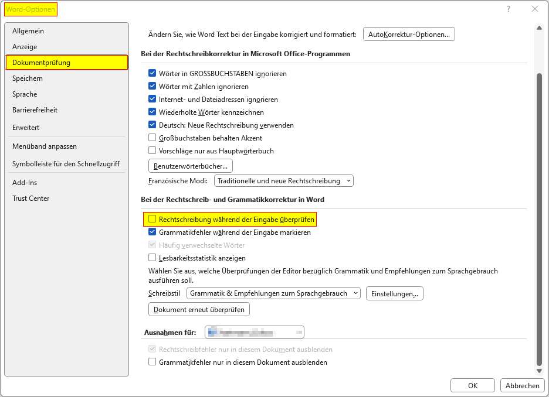

Rechtschreibprüfung aktivieren
Die automatische Rechtschreibprüfung ist ein nützliches Feature, das Ihnen hilft, Fehler in Ihren Dokumenten zu erkennen und zu korrigieren, während Sie tippen. Dieses Feature kann je nach Bedarf aktiviert oder deaktiviert werden.
So aktivieren Sie die automatische Rechtschreibprüfung
- Öffnen Sie Microsoft Word.
- Klicken Sie auf die Registerkarte „Datei“ in der oberen linken Ecke.
- Wählen Sie „Optionen“ am unteren Rand des Menüs.
- Im Dialogfenster „Word-Optionen“ wählen Sie auf der linken Seite „Dokumentprüfung“.
- Setzen Sie ein Häkchen bei „Rechtschreibung während der Eingabe überprüfen“.
- Klicken Sie auf „OK“, um Ihre Änderungen zu speichern und das Dialogfenster zu schließen.
Um die automatische Rechtschreibprüfung wieder zu entfernen, deaktivieren Sie das Häkchen bei „Rechtschreibung während der Eingabe überprüfen“ wieder.
